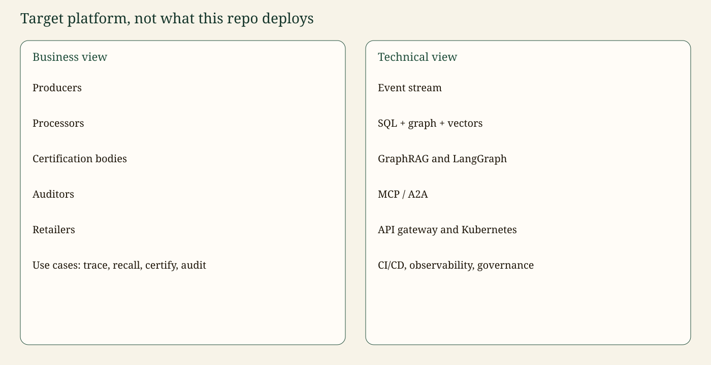

AgriTrace. Fictional data. Canonical write-up: the repository README. Images: docs/assets, referenced relatively from this file.
Canonical copy: README §5.4.
This page describes a platform for an agrifood certification organisation. It is not what compose.yaml deploys. The repository is the reference slice: one SQL extract, one graph, one API process, a mock model, and a human interrupt.

| Actor | Needs |
|---|---|
| Producers | Prove the harvest lot and see where it went if there is a recall |
| Processors | Record transformations, including splits and mixes |
| Certification bodies | Issue and expire credentials such as CERT-77 |
| Auditors | Attach findings to a site and to lots |
| Retailers | See the upstream of lots they received, not other shops’ lots |
Use cases: trace, recall, certify, audit.
%%{init: {'theme': 'base', 'themeVariables': {'primaryColor': '#1F4D3A', 'primaryTextColor': '#F7F3E8', 'primaryBorderColor': '#14352A', 'lineColor': '#C4A35A', 'secondaryColor': '#F4E8C1', 'tertiaryColor': '#E7F0EA', 'fontFamily': 'Georgia, serif'}}}%%
flowchart LR
bus["Event stream"] --> erp["ERP SQL"] --> graph["Graph + vectors"]
graph --> rag["GraphRAG"] --> lg["LangGraph"]
lg --> edge["MCP / A2A"] --> gw["API gateway"] --> k8s["Kubernetes"]
classDef t fill:#1F4D3A,stroke:#14352A,color:#F7F3E8;
class bus,erp,graph,rag,lg,edge,gw,k8s t;| Layer | Target | In this repo |
|---|---|---|
| Ingestion | Stream of EPCIS-like events | Batch SQL extract |
| Stores | Postgres, Neo4j, vector index | SQLite, Neo4j optional, hash embeddings |
| Reasoning | LangChain prompts, LangGraph workflows | Implemented |
| Edges | MCP tools, A2A tasks | MCP plus a minimal card |
| Edge | API gateway, Kubernetes, CI/CD | FastAPI, Compose, GitHub Actions |
| Cross-cutting | Identity, row security, audit vault, OTel, LLM policy | Sketched and partly implemented (section 10 of the README) |
Identity, a durable audit log, and a full A2A lifecycle are on the roadmap, not done.